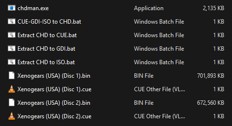

How to use CHDMAN
Posted: November 1, 2025 by Luke Hagan
The CHD (Compressed Hunks of Data) file format is adored by many emulation enthusiasts and gaming archivists because of its exceptional compression. However, the program used to create them is operated exclusively through a command-line interface, so it may seem daunting
to anyone without the technical know-how. CHDMAN was originally made for the MAME emulator to handle the hard-drive contents of certain arcade machines, but it has since been adopted by other emulators because of its lossless compression.
This tutorial will show you how to pack .cue, .iso and .gdi files into a .chd file, as well as how to unpack them from a .chd file.
![[Screenshot of a directory containing chdman.exe]](images\chdman.png)
How to setup CHDMAN
CHDMAN can be obtained by downloading the standalone MAME emulator, it should be found in the same directory as MAME.exe. However, if you aren't willing to download an entire emulator for the sake of a single program, you can download it from here. If you downloaded CHDMAN from that link, most of the setup should already be done (except for extracting from CHD to ISO see below). But I'll still go through the whole process just in case the link ends up dead.
CUE-GDI-ISO to CHD
1. Create a new text document in the same directory as chdman.exe
2. Change the file extension from .txt to .bat (Ignore the warning)
3. Open it with a text editor (i.e. Notepad) then insert the following:
for /r %%i in (*.cue, *.gdi, *.iso) do chdman createcd -i "%%i" -o "%%~ni.chd"
4. Save the file as: CUE-GDI-ISO to CHD.bat
Extract CHD to CUE
1. Create a new text document in the same directory as chdman.exe
2. Change the file extension from .txt to .bat (Ignore the warning)
3. Open it with a text editor then insert the following:
for /r %%i in (*.chd) do chdman extractcd -i "%%i" -o "%%~ni.cue"
4. Save the file as: Extract CHD to CUE.bat
Extract CHD to GDI
1. Create a new text document in the same directory as chdman.exe
2. Change the file extension from .txt to .bat (Ignore the warning)
3. Open it with a text editor then insert the following:
for /r %%i in (*.chd) do chdman extractcd -i "%%i" -o "%%~ni.gdi"
4. Save the file as: Extract CHD to GDI.bat
Extract CHD to ISO
1. Create a new text document in the same directory as chdman.exe
2. Change the file extension from .txt to .bat (Ignore the warning)
3. Open it with a text editor then insert the following:
for %%i in (*.chd) do (chdman extractcd -i "%%i" -o "%%~ni.cue" -ob "%%~ni.iso" del "%%~ni.cue")
4. Save the file as: Extract CHD to ISO.bat
Using CHDMAN
At this point, you should have everything you need to start creating .chd files. If your ROM files come with multiple .bin files, make sure they are all included along with the .cue or .gdi file. It is possible to process multiple different ROMs in one go.
Compress to CHD file
Put your .bin files with its respective .cue or .gdi files in the same directory as chdman.exe as shown above. Click on "CUE-GDI-ISO to CHD.bat" to begin compressing the files. This operation is very CPU intensive, so your processor may heat up quickly.
Extracting from CHD file
If you want to patch your game, you'll find that you need a file format such as .iso or .cue. Thanks to CHDMAN's lossless compression you can unpack the CHD into any of these three file formats regardless of what format it was originally. All you need to do is to click the appropriate "Extract CHD to ***.bat" file.
Sources:
Recalbox WikiDisastrousFill on Reddit